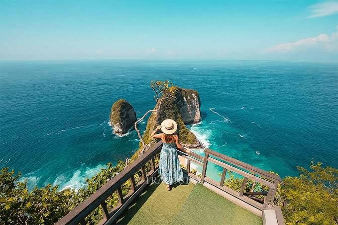
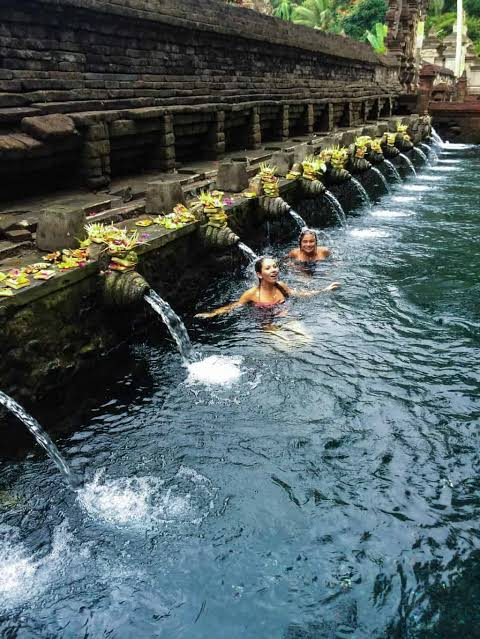
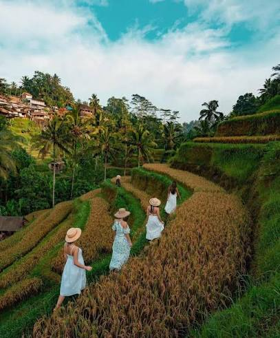

Bali is a beautiful island in Indonesia famous for its tropical beaches, ancient temples, green rice terraces and natural waterfalls. It is one of the most popular holiday destinations in the world. Bali offers a perfect combination of adventure, relaxation, culture and natural beauty.



Kelingking Beach is one of the most famous attractions on Nusa Penida Island. It is known for its unique cliff shape, blue ocean and beautiful coastal views.
Uluwatu Temple is a famous Hindu temple located on a high cliff overlooking the Indian Ocean. It is especially popular for its beautiful sunset views.
Tegallalang Rice Terraces are famous for their beautiful green landscapes and traditional rice farming. It is a wonderful place to experience Bali's natural beauty.